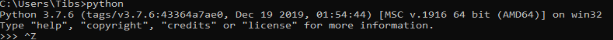
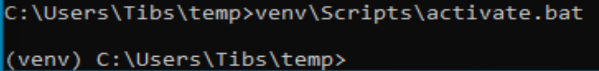
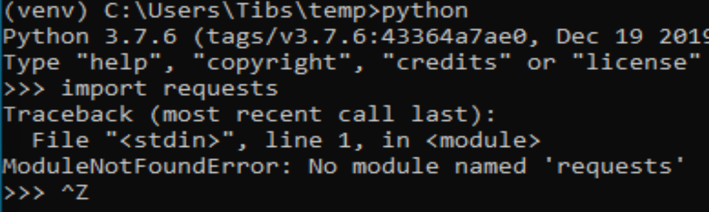
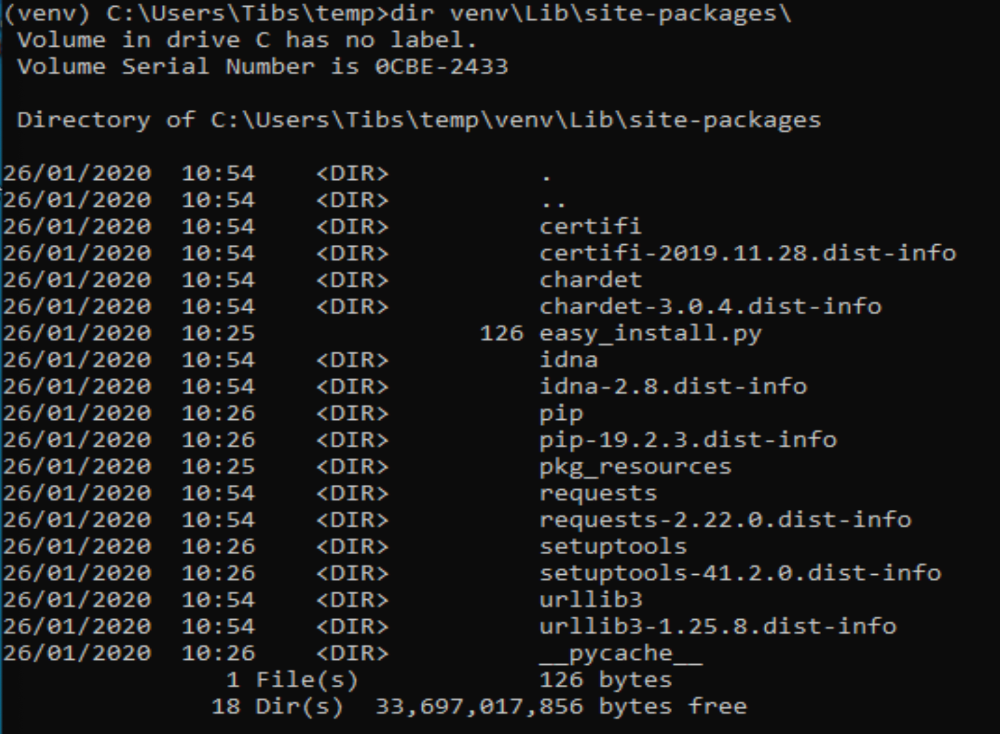

An introduction to Python virtual environments
Contents
- Why do we need virtual environments
- The Examples
- python3 -m venv
- How it works
- Finding out what is installed
- Where to put the venv directory
- python3 -m venv help
- Wrappers to make it easier
- IDEs
- Awkward questions
- What happens if I activate a virtual environment while I've got one activated?
- Can I (deliberately) create a virtual environment that depends on another?
- How do I stop pip from installing outside a virtual environment?
- Do I need to activate the virtual environment?
- What happens when I upgrade Python?
- What about an existing requirements.txt?
- The venv directory and version control systems
- The --system-site-packages switch
- Multiple Pythons
- Other tools
- An example of using venv on Windows 10
- Interesting Links
Why do we need virtual environments
Shouldn't alter the system Python
Sometimes the Python provided by your operating system is actually acceptable. This can, for instance happen with Linux systems, where you might be quite happy with the version of Python installed by the system package mechanisms.
And if you're happy only using software that can be installed by this route (e.g., by apt-get or yum or whatever), then you could argue that you don't need virtual environments.
However, in practice you are eventually likely to want to install something more recent that your operating system provides, or perhaps a package that the operating system tools don't make available.
The thing to remember here is:
Don't mix installing things by the operating system mechanisms and the language-specific mechanisms.
In other words, if you have an OS installed Python, don't try to update it using pip.
Luckily, most systems make this hard (on Linux you'd typically need to use sudo), which is a good hint not to do it!
Why not, though?
There are three reasons:
Firstly, it's quite possible that the OS itself is using that version of Python, and if you change what is installed, you may break the things the OS relies on. This is hard to detect beforehand.
Secondly, OS packaging solutions keep a record of what they have installed, so they can correctly update or remove packages. If you "go behind their back", their recorded knowledge will be wrong, which can lead to problems when trying to upgrade.
Thirdly, it still doesn't help with the "need for different versions for different purposes" problem, that we will get to later on.
Can't alter the available Python
Sometimes the person managing your computer doesn't let you alter the available Python libraries. This may be for company legal reasons, or whatever.
Note that pip does actually let you install packages into a user-local directory, but that relies on your remembering to do it, and there's no obvious visibility that this has been done. And it still doesn't addresss the "need for different versions" problem.
Even if you could subvert that, you probably shouldn't.
You want to work on two programs that have conflicting dependencies
This is the crux of it.
If you are working on existing packages, installed via pip, then they will automatically install their dependencies. But sometimes two packages depend on mutually incompatible things - typically, different versions of a package or set of packages.
So if project A needs versions 1 through 3 of a package, but won't work with 4 or higher, and project B needs at least version 5, then there is a problem running them both at the same time.
Virtual environments are designed to make it easy to handle this, and also relatively obvious that you are doing so.
Managing dependencies
A virtual environment lets you be explicit about what you have installed, and that makes it easier to produce a proper package when you're developing.
pip freeze and pipdeptree
But also, tidiness
Let us not also forget that we might want to keep things tidy.
If I'm working on project A, I might have a set of dependencies to do with, perhaps, documentation tools, whereas for project B I need things for machine learning, and for project C web development. Each of those can imply a large number of Python packages (particularly the machine learning case), which don't overlap much. There's no particular reason to have the unnecessary packages available, and if we constrain our workspace a bit, it makes it easier to reason about problems when they do occur.
License management
Having all the packages that are being used in one place makes it easier to inspect them for license compliance.
What about upgrading Python?
Virtual environments don't help directly (with upgrading Python and "losing" the installed packages), but pipenv (check?) and poetry can.
Actual use cases
At our January meeting, we were told about pypercard, which is a very nice package, but has quite a few dependencies. If I want to play with it, then I probably don't want to "splash" those dependencies all over my normal working environment, especially if I'm also doing actual work with Python.
At work, we had two Python programs we needed to use in our build chain, but they had incompatible version requirements of support libraries. The solution was to use a different virtual environment for each.
Also at work, we wanted to know exactly which packages were needed for a particular project. Again, running in a virtual environment meant we could easily list the required packages, what version we had installed, and what packages had been installed automatically as dependencies of other packages.
The Examples
In general, where I say "unix", that should include most common Linux distributions, and also the BSDs and Mac OS. I assume your shell is something like bash or zsh or even fish. For Windows, I assume Windows 10, and I assume your shell is CMD.EXE or Powershell - I believe either should be OK. My experience is more limited for Windows, but I shall include actual screenshots.
The unix examples are from my Mac at home. The text is cut-and-pasted from my terminal.
When you see tibs ~$ (or something similar) at the start of a line, that is my prompt - everything up to the $. So if you're following along, only type the stuff after the $ (and the space that follows it).
For Windows, I've run Windows 10 in a virtual machine, and made screenshots. Apologies for those - this seemed the simplest way to do it. I'll mostly only talk about Windows when I'm talking about its differences from unix.
I have tried all the venv examples on Windows, and I've installed and checked poetry.
python3 -m venv
We're going to start by looking at the "official" way of creating and using virtual environments, as of Python 3.3.
But first some preparation.
Make a working directory
First, I make a directory to work in, and move there:
tibs ~$ mkdir temp
tibs ~$ cd temp
tibs ~/temp$
Check what Python(s) we have available
Let's find out what version of Python I'm running - on my machine:
tibs ~/temp$ python --version Python 2.7.17 tibs ~/temp$ python3 --version Python 3.7.6
I can investigate that a bit further:
tibs ~/temp$ which python /usr/local/bin/python tibs ~/temp$ which python3 /usr/local/bin/python3
(On Windows, use where python and where python3 respectively, which will show you all the possible programs for each command - it's actually more informative than which on unix.)
As it happens, I installed the Python 3 myself, deliberately, and the Python 2 has been installed as a depencency of something else (otherwise I wouldn't have bothered).
My Mac does provide its own version of Python 2, but if I run it I get a warning:
tibs ~/temp$ /usr/bin/python WARNING: Python 2.7 is not recommended. This version is included in macOS for compatibility with legacy software. Future versions of macOS will not include Python 2.7. Instead, it is recommended that you transition to using 'python3' from within Terminal. Python 2.7.16 (default, Nov 9 2019, 05:55:08) [GCC 4.2.1 Compatible Apple LLVM 11.0.0 (clang-1100.0.32.4) (-macos10.15-objc-s on darwin Type "help", "copyright", "credits" or "license" for more information. >>> exit()
Create a virtual environment
To create a new virtual environment with Python 3, I just need to do:
tibs ~/temp$ python3 -m venv venv
and now if I look, I've got a new directory called venv.
tibs ~/temp$ ls venv
Before going any further, let's unpack that command line a bit.
python3 is the Python I want to use to create the new virtual environment. If I wanted to be specific about exactly which Python I wanted, and assuming I've got them both installed, I could do:
$ python3.6 -m venv venv
or:
$ python3.7.1 -m venv venv
-m venv tells Python to load the venv module and run it.
The Python standard library comes with several modules that you can run in this way. They all end with code like:
if __name__ == '__main__': do_something()
In the case of venv.py, that "do something" is to create the setup for a virtual environment for this particular Python.
that last venv is the name of the directory to create which will hold the "workings" of the virtual environment. I'll talk about how to choose a name for this directory, and where to put it, later on, but for now the name venv is fairly self-explanatory, and the default place, the current directory, is what we want.
Activate the virtual environment
Now, creating that directory hasn't done anything else. In particular, it hasn't activated the virtual environment.
I am embarrased to acknowledge how many times I've forgotten that!
The next thing we need to do differs slightly depending on what shell we are using. For bash and zsh, it's simply:
tibs ~/temp$ source venv/bin/activate
If you're old fashioned and use csh, then you should do:
tibs ~/temp$ source venv/bin/activate.csh
and if you use fish (as I do) then you do
tibs ~/temp$ source venv/bin/activate.fish
Note that it will not work to do:
tibs ~/temp$ venv/bin/activate
even though that sounds more sensible.
I always write the activation command using source, even though most shells also allow abbreviating that to . (dot / period). Since it's hard enough to remember that it needs to be sourced, I prefer the longer/more obvious form.
On Windows, if you're using CMD.EXE, you do:
> venv\Scripts\activate.bat
and if you're using Powershell you do:
PS > venv\Scripts\Activate.ps1
Yes, windows works differently, so there's no equivalent to source. Which is nice.
Note
The Windows virtual environment directory provides activation scripts for CMD.EXE and Powershell, as I've said, but it also always includes the Bash activation script, as venv\Scripts\activate, to allow for Windows users who are using Bash.
Note
When using git bash (the bash installed with git on Windows) there seem to be occasional problems. For instance, I did not have permission to run the Python I had installed from the Windows App Store, but the Python installed from python.org worked OK. Also, some problems were observed at the CamPUG workshop in February 2020. However, if all goes well, you should be able to use venv/Scripts/activate to activate a git bash environment in the normal manner.
In all cases, the next prompt should now start with (venv) - that is, the name of the virtual environment directory, in parentheses.
For instance, in my case:
.. code:: bash
tibs ~/temp$ source venv/bin/activate.fish (venv) tibs ~/temp$
Working in a virtual environment
So our prompt now says:
.. code:: bash
(venv) tibs ~/temp$
or something like that. What does that give us?
Well, the first thing is to make it more obvious what Python we're using. Specifically:
(venv) tibs ~/temp$ python3 --version Python 3.7.6 (venv) tibs ~/temp$ python --version Python 3.7.6
That is, the python3 command gives us Python 3.7.6, the Python we used to create the venv, but now the python command does as well.
We'll go into why that is later on, but for the moment, it's enough to notice that both of those commands point "inside" the virtual environment directory:
(venv) tibs ~/temp$ which python3 /Users/tibs/temp/venv/bin/python3 (venv) tibs ~/temp$ which python /Users/tibs/temp/venv/bin/python
not to the "original" locations.
(and remember, on Windows, use where instead of which.)
...and actually, the same has been done for pip and pip3 as well, which makes of new packages installation just that bit easier.
Deactivating a virtual environment
Whatever shell or OS you are using, you just use the deactivate command to deactivate it:
(venv) tibs ~/temp$ deactivate tibs ~/temp$
Using our virtual environment
So let's install something into our virtual environment.
First, we need to remember to re-activate it:
tibs ~/temp$ source venv/bin/activate.fish (venv) tibs ~/temp$
and then we can install a package. I shall choose requests - this is actually a package that has caused me dependency clashes at work in the past, even though it's generally very well behaved.
(venv) tibs ~/temp$ pip install requests Collecting requests Using cached https://files.pythonhosted.org/packages/51/bd/23c926cd341ea6b7dd0b2a00aba99ae0f828be89d72b2190f27c11d4b7fb/requests-2.22.0-py2.py3-none-any.whl Collecting idna<2.9,>=2.5 (from requests) Using cached https://files.pythonhosted.org/packages/14/2c/cd551d81dbe15200be1cf41cd03869a46fe7226e7450af7a6545bfc474c9/idna-2.8-py2.py3-none-any.whl Collecting urllib3!=1.25.0,!=1.25.1,<1.26,>=1.21.1 (from requests) Downloading https://files.pythonhosted.org/packages/e8/74/6e4f91745020f967d09332bb2b8b9b10090957334692eb88ea4afe91b77f/urllib3-1.25.8-py2.py3-none-any.whl (125kB) |||||||||||||||||||||||||||||||||| 133kB 2.6MB/s Collecting certifi>=2017.4.17 (from requests) Using cached https://files.pythonhosted.org/packages/b9/63/df50cac98ea0d5b006c55a399c3bf1db9da7b5a24de7890bc9cfd5dd9e99/certifi-2019.11.28-py2.py3-none-any.whl Collecting chardet<3.1.0,>=3.0.2 (from requests) Using cached https://files.pythonhosted.org/packages/bc/a9/01ffebfb562e4274b6487b4bb1ddec7ca55ec7510b22e4c51f14098443b8/chardet-3.0.4-py2.py3-none-any.whl Installing collected packages: idna, urllib3, certifi, chardet, requests Successfully installed certifi-2019.11.28 chardet-3.0.4 idna-2.8 requests-2.22.0 urllib3-1.25.8 WARNING: You are using pip version 19.2.3, however version 20.0.2 is available. You should consider upgrading via the 'pip install --upgrade pip' command.
Anyway, that's also given us some good advice. When we create a virtual environment, it puts a version of pip into it for us, but it only knows about the version that comes with that version of Python.
Interesting aside: you can do python3 -m pip to use that specific pip
Anyway, it's telling us there is a more recent version of pip, and generally we want to use the most recent version, so let's update it as we were told:
(venv) tibs ~/temp$ pip install --upgrade pip Collecting pip Downloading https://files.pythonhosted.org/packages/54/0c/d01aa759fdc501a58f431eb594a17495f15b88da142ce14b5845662c13f3/pip-20.0.2-py2.py3-none-any.whl (1.4MB) |||||||||||||||||||||||||||||||||| 1.4MB 2.8MB/s Installing collected packages: pip Found existing installation: pip 19.2.3 Uninstalling pip-19.2.3: Successfully uninstalled pip-19.2.3 Successfully installed pip-20.0.2
Let's check what we've done:
(venv) tibs ~/temp$ pip --version pip 20.0.2 from /Users/tibs/temp/venv/lib/python3.7/site-packages/pip (python 3.7)
and to prove we've got the requests package installed:
(venv) tibs ~/temp$ python Python 3.7.6 (default, Jan 28 2020, 22:16:20) [Clang 11.0.0 (clang-1100.0.33.16)] on darwin Type "help", "copyright", "credits" or "license" for more information. >>> import requests >>> exit()
(venv) tibs ~/temp$ deactivate tibs ~/temp$
As you can see, this puts the prompt back to normal as well.
And now we're back to the versions of Python outside the virtual environment:
tibs ~/temp$ python --version Python 2.7.17 tibs ~/temp$ tibs ~/temp$ pip --version pip 19.3.1 from /usr/local/lib/python2.7/site-packages/pip (python 2.7) tibs ~/temp$ tibs ~/temp$ python3 Python 3.7.6 (default, Jan 28 2020, 22:16:20) [Clang 11.0.0 (clang-1100.0.33.8)] on darwin Type "help", "copyright", "credits" or "license" for more information. >>> import requests Traceback (most recent call last): File "<stdin>", line 1, in <module> ModuleNotFoundError: No module named 'requests' >>> exit()
In other words, the changes we made in the virtual environment have "gone away".
And, if we reactivate, they will "come back" again.
How it works
(what is in the venv directory)
tibs ~/temp$ ls -F venv bin/ include/ lib/ pyvenv.cfg
tibs ~/temp$ more venv/pyvenv.cfg home = /usr/local/bin include-system-site-packages = false version = 3.7.6
tibs ~/temp$ ls -F venv/bin/ activate chardetect* pip* python@ activate.csh easy_install* pip3* python3@ activate.fish easy_install-3.7* pip3.7*
tibs ~/temp$ ls -l venv/bin/python lrwxr-xr-x 1 tibs staff 7 19 Jan 16:50 venv/bin/python -> python3 tibs ~/temp$ ls -l venv/bin/python3 lrwxr-xr-x 1 tibs staff 22 19 Jan 16:50 venv/bin/python3 -> /usr/local/bin/python3
tibs ~/temp$ ls venv/include
tibs ~/temp$ ls -F venv/lib python3.7/ tibs ~/temp$ ls -F venv/lib/python3.7 site-packages/
tibs ~/temp$ ls -F venv/lib/python3.7/site-packages __pycache__/ pip-20.0.2.dist-info/ certifi/ pkg_resources/ certifi-2019.11.28.dist-info/ requests/ chardet/ requests-2.22.0.dist-info/ chardet-3.0.4.dist-info/ setuptools/ easy_install.py setuptools-41.2.0.dist-info/ idna/ urllib3/ idna-2.8.dist-info/ urllib3-1.25.8.dist-info/ pip/
By contrast, if I create another virtual environment (venv2) and don't install anything in it, its venv2/lib looks like:
tibs ~/temp$ ls -F venv2/lib/python3.7/site-packages/ __pycache__/ pkg_resources/ easy_install.py setuptools/ pip/ setuptools-41.2.0.dist-info/ pip-19.2.3.dist-info/
Finding out what is installed
pip freeze
Back in the original virtual environment, after installing requests:
tibs ~/temp$ source venv/bin/activate.fish (venv) tibs ~/temp$ pip freeze certifi==2019.11.28 chardet==3.0.4 idna==2.8 requests==2.22.0 urllib3==1.25.8
It's called freeze because this command is originally intended for creating a file listing exactly the package versions installed. pip can then be given that text file and reproduce the same installation.
So, for instance:
(venv) tibs ~/temp$ pip freeze > requirements.txt
and then elsewhere, use the same requirements.txt file:
(venv) tibs ~/temp$ pip install -r requirements.txt
pipdeptree
https://github.com/naiquevin/pipdeptree and https://pypi.org/project/pipdeptree/
This is a very useful package for showing what is installed, and why (i.e., what package needed another package). It can also be very useful for diagnosing problems (for instance, if the dependency resolution of pip gets confused and it can't work out what versions of what it needs).
tibs ~/temp$ source venv/bin/activate.fish (venv) tibs ~/temp$ pip install pipdeptree Collecting pipdeptree Downloading pipdeptree-0.13.2-py3-none-any.whl (16 kB) Requirement already satisfied: pip>=6.0.0 in ./venv/lib/python3.7/site-packages (from pipdeptree) (20.0.2) Installing collected packages: pipdeptree Successfully installed pipdeptree-0.13.2
and then:
(venv) tibs ~/temp$ pipdeptree pipdeptree==0.13.2 - pip [required: >=6.0.0, installed: 20.0.2] requests==2.22.0 - certifi [required: >=2017.4.17, installed: 2019.11.28] - chardet [required: >=3.0.2,<3.1.0, installed: 3.0.4] - idna [required: >=2.5,<2.9, installed: 2.8] - urllib3 [required: >=1.21.1,<1.26,!=1.25.1,!=1.25.0, installed: 1.25.8] setuptools==41.2.0
This not only tells us what is installed and at what version, but what packages needed it, and what versions they were happy to accept.
There's quite a lot more this tool can do - go and look at the website to see its documentation.
Where to put the venv directory
"project" - one venv per directory tree
This is a natural way to work - for instance, to have a ~/work directory, and inside it a sub-directory for each project, and each of those contains its own venv.
When you cd into a directory, you activate its virtual environment.
This works well if you use one terminal window per project, and also works well with IDEs, which generally like to identify a project directory tree.
There are also tools like direnv (see other tools) which will facilitate this by actually starting up the virtualenv when you cd into the directory tree.
One of the reasons this works well is it makes it fairly easy to remember which virtual environment you should be using.
I've used this at work, where my Python code tended to be organised in this manner.
This is also the sort of way of working that both pipenv and poetry encourage, because they look in the current directory and "upwards" to find the specification of which virtual environment to use. Regardless, both (certainly pipenv) keep the actual virtual environment directories in a central place - this makes it easier for the programs to manage them.
"environment" - one venv per purpose
(The name "environment" isn't as good a name for this, but it will do.)
This works well if you like to keep one setup for each type of work.
For instance, one environment for documentation work (docutils, sphinx, etc.), regardless of where it is. Perhaps another for using numpy/scipy and so on.
I've tended to use this arrangement more at home.
This relies a lot more no actually keeping an eye on the prompt, to make sure that the right virtual environment for the current purpose is in force.
If you're working this way, you almost certainly want to keep the virtual environment directories in a central place. On Linux this would typically be in ~/venv/ or ~/.venv/ or perhaps somewhere like ~/local/share/virtualenvs/.
python3 -m venv help
Note that python3 -m venv works like a "proper" command, in that it can take a variety of arguments, and even has help:
$ python3 -m venv --help usage: venv [-h] [--system-site-packages] [--symlinks | --copies] [--clear] [--upgrade] [--without-pip] [--prompt PROMPT] ENV_DIR [ENV_DIR ...] Creates virtual Python environments in one or more target directories. positional arguments: ENV_DIR A directory to create the environment in. optional arguments: -h, --help show this help message and exit --system-site-packages Give the virtual environment access to the system site-packages dir. --symlinks Try to use symlinks rather than copies, when symlinks are not the default for the platform. --copies Try to use copies rather than symlinks, even when symlinks are the default for the platform. --clear Delete the contents of the environment directory if it already exists, before environment creation. --upgrade Upgrade the environment directory to use this version of Python, assuming Python has been upgraded in-place. --without-pip Skips installing or upgrading pip in the virtual environment (pip is bootstrapped by default) --prompt PROMPT Provides an alternative prompt prefix for this environment. Once an environment has been created, you may wish to activate it, e.g. by sourcing an activate script in its bin directory.
Wrappers to make it easier
virtualenv
virtualenv is essentially where Python virtual envrironments all started.
(Well, actually it looks as if workingenv 0.1 is where it all started, but virtualenv took over in 2007. And anyway both are by the same author, Ian Bicking.)
That does mean that if you want virtual environments for Python2 or early versions of Python 3, this is still the package to use.
Back in my temp directory, but I delete the existing venv directory.
The command virtualenv NAME will create a virtual environment called NAME, using the same Python that was used to install virtualenv.
To get a specific Python, use the -p (--python) switch:
tibs ~/temp$ virtualenv -p python3.7 VENV Running virtualenv with interpreter /usr/local/bin/python3.7 Already using interpreter /usr/local/opt/python/bin/python3.7 Using base prefix '/usr/local/Cellar/python/3.7.6_1/Frameworks/Python.framework/Versions/3.7' New python executable in /Users/tibs/temp/VENV/bin/python3.7 Also creating executable in /Users/tibs/temp/VENV/bin/python Installing setuptools, pip, wheel... done.
and that has created a directory called VENV, as one might expect:
tibs ~/temp$ ls -F VENV bin/ include/ lib/
There is also a "hidden" file in there, a link:
tibs ~/temp$ ls -l VENV/.Python lrwxr-xr-x 1 tibs staff 80 1 Feb 16:43 VENV/.Python -> /usr/local/Cellar/python/3.7.6_1/Frameworks/Python.framework/Versions/3.7/Python
Note that there isn't a pyenv.cfg file - that's a later invention.
The bin directory looks like:
tibs ~/temp$ ls -F VENV/bin/ activate activate.xsh pip* python-config* activate.csh activate_this.py pip3* python3@ activate.fish easy_install* pip3.7* python3.7* activate.ps1 easy_install-3.7* python@ wheel*
Once you've created the virtual environment, it works much as the venv style virtual environment - in particular, you activate and deactivate it in the same way.
The virtualenv documentation contains information on how it relates to the venv provided by Python 3.3 and later. You can probably ignore that unless you're trying to nest virtual environments of the two types, or are trying to write Python code to manage both sorts of virtual environments.
As one might expect, virtualenv also works on Windows.
PyCharm assumes that you use virtualenv to manage your virtual environments.
My recommendation: unless you have good reason to use virtualenv, just use python3 -m venv.
(NB: install with pip or your system package manager. That first is something of a bootstrap problem, which is probably a big part of why venv got added to Python 3 - that and the fact that virtual environments are now a standard thing, which they clearly weren't when virtualenv was invented.)
virtualenvwrapper
virtualenvwrapper is a wrapper for virtualenv (well, it's in the name!) that aims to make it easier to use, by providing some extra commands.
Once you've installed it, there's a degree of manual setup, although it's reasonable clearly explained in the documentation.
Once you've set it up, it will:
- Allow you to keep all of your virtual environment directories under one single directory - typically something like $HOME/.virtualenvs.
- Provide a new command, mkvirtualenv to create new virtual environments.
- Provide a command workon that lets you change to a (different) virtual environment.
So, for instance, I might do:
tibs ~/temp$ mkvirtualenv use-requests
which would create me a virtual environment directory:
/Users/tibs/.virtualenvs/use-requests
The content of that directory would be the same as if it had been created directly using virtualenv.
To use that virtual environment, I would just use the workon command:
tibs ~/temp$ workon use-requests (use-requests) tibs ~/temp$
To change to another virtual environment (created with mkvirtualenv) I can use the workon command with the name of that new virtual environment - it will deactivate and then activate the new environment for me.
And, of course, because it is still a virtualenv environment, I can deactivate by hand if I wish: .. code:: bash
(use-requests) tibs ~/temp$ deactivate tibs ~/temp$
Notes:
- virtualenvwrapper is (mostly) a set of shell scripts, written in bash, ksh
and zsh, so it won't work outside those environments (even though
virtualenv does). However, if you really want a virtualenv wrapper, other
people have written similar things;
- For Windows, there is virtualenvwrapper-win which says it works in CMD.EXE, but not in Powershell
- For the fish shell (which I use), there's virtualfish
- I have used virtualenvwrapper in the past, but nowadays I just use the venv support in modern Python 3.
- virtualenvwrapper is installed with pip, so some of the same comments as for virtualenv apply.
pipenv
pipenv aims to make using virtual environments easier, but also to help with package management for a project as well.
(Note that pipenv uses some odd characters in its output, to try to be "amusing". Which is nice enough, but I've had to replace them with ? in this file.)
To start using it:
tibs ~/temp$ cd ~/temp tibs ~/temp$ pipenv install --python 3.7 Creating a virtualenv for this project Pipfile: /Users/tibs/temp/Pipfile Using /usr/local/bin/python3 (3.7.6) to create virtualenv ? Creating virtual environment...Already using interpreter /usr/local/opt/python/bin/python3.7 Using base prefix '/usr/local/Cellar/python/3.7.6_1/Frameworks/Python.framework/Versions/3.7' New python executable in /Users/tibs/.local/share/virtualenvs/temp--1EXmzEU/bin/python3.7 Also creating executable in /Users/tibs/.local/share/virtualenvs/temp--1EXmzEU/bin/python Installing setuptools, pip, wheel... done. Running virtualenv with interpreter /usr/local/bin/python3 ? Successfully created virtual environment! Virtualenv location: /Users/tibs/.local/share/virtualenvs/temp--1EXmzEU Creating a Pipfile for this project Pipfile.lock not found, creating Locking [dev-packages] dependencies Locking [packages] dependencies Updated Pipfile.lock (a65489)! Installing dependencies from Pipfile.lock (a65489) ? |||||||||||||||||||||||||||||||| 0/0 00:00:00 To activate this project's virtualenv, run pipenv shell. Alternatively, run a command inside the virtualenv with pipenv run.
As it says, this has put a new virtual environment in a "standard" place, which on unix is ~/.local/share/virtualenvs. It has also automatically named that virtual environment, using the current directory name and a unique hash code.
If I look in that directory:
(temp) tibs ~/temp$ ls -aF ~/.local/share/virtualenvs/temp--1EXmzEU/ ./ ../ .Python@ .project bin/ include/ lib/
then I can see that this is a virtualenv style virtual environment, not a venv style.
It has also created two files in the current directory:
tibs ~/temp$ ls -F Pipfile Pipfile.lock
The Pipfile gives a description of the newly created virtual environment:
[[source]] name = "pypi" url = "https://pypi.org/simple" verify_ssl = true [dev-packages] [packages] [requires] python_version = "3.7"
and the Pipfile.lock gets more specific and less human-readable:
{
"_meta": {
"hash": {
"sha256": "7e7ef69da7248742e869378f8421880cf8f0017f96d94d086813baa518a65489"
},
"pipfile-spec": 6,
"requires": {
"python_version": "3.7"
},
"sources": [
{
"name": "pypi",
"url": "https://pypi.org/simple",
"verify_ssl": true
}
]
},
"default": {},
"develop": {}
}
The normal way to use the virtual environment is then (as it suggests) to do:
tibs ~/temp$ pipenv shell I Launching subshell in virtual environment Welcome to fish, the friendly interactive shell tibs ~/temp$ source /Users/tibs/.local/share/virtualenvs/temp--1EXmzEU/bin/activate.fish (temp) tibs ~/temp$
This actually starts a new shell with the virtual environment enabled in it.
(So, to get out of the environment, I just use CTRL-D or exit as I normally would to get out of a unix subshell.)
With pipenv, I use it (and not pip) to install new packages:
(temp) tibs ~/temp$ pipenv install requests Installing requests Adding requests to Pipfile's [packages] ? Installation Succeeded Pipfile.lock (444a6d) out of date, updating to (a65489) Locking [dev-packages] dependencies Locking [packages] dependencies ? Success! Updated Pipfile.lock (444a6d)! Installing dependencies from Pipfile.lock (444a6d) ? |||||||||||||||||||||||||||||||| 5/5 00:00:00
Now the Pipfile and Pipfile.lock have been updated - the Pipfile to:
[[source]] name = "pypi" url = "https://pypi.org/simple" verify_ssl = true [dev-packages] [packages] requests = "*" [requires] python_version = "3.7"
and the Pipfile.lock to something rather longer and more complicated, but which basically uniquely identifies the packages that were installed.
The Pipfile.lock is intended to contain all the information that is needed to recreate exactly this virtual environment. If there is a Pipfile.lock in a directory, and you give the pipenv install command with no packages, it will set up the virtual environment to match that described in the lock file.
Notes:
- This all works on Windows 10 as well.
- pipenv has always worked with Python 2 and Python 3, and took the decision to use virtualenv environments for both. I don't know if it will ever move towards supporting venv environments instead.
- If you have a requirements.txt file in the current directory (the one in which you are running pipenv install) or its parent(s), then pipenv will try to use it to set up your environment. That can be surprising if the file is not one you meant to use for this purpose!
- You can use pip install inside a pipenv virtual environment, and it will install the package you ask for, but it won't update the Pipfile or Pipfile.lock. I've fallen over that more than once in the past.
- There is some slightly complicated political history to the pipenv project.
poetry
I built Poetry because I wanted a single tool to manage my Python projects from start to finish. I wanted something reliable and intuitive that the community could use and enjoy.
—Sbastien Eustace
If you want to create a new project, then the poetry new command will create the project directory and a sensible starting layout.
I don't really want to go quite that far (although actually it's a good idea in general), so I shall just use poetry init to get started. This takes the user through some questions to generate the pyproject.toml file that poetry requires:
tibs ~/temp$ poetry init This command will guide you through creating your pyproject.toml config. Package name [temp]: Version [0.1.0]: Description []: Author [Tibs <tibs@tonyibbs.co.uk>, n to skip]: License []: MIT Compatible Python versions [^3.7]: Would you like to define your main dependencies interactively? (yes/no) [yes] no Would you like to define your dev dependencies (require-dev) interactively (yes/no) [yes] no Generated file [tool.poetry] name = "temp" version = "0.1.0" description = "" authors = ["Tibs <tibs@tonyibbs.co.uk>"] license = "MIT" [tool.poetry.dependencies] python = "^3.7" [tool.poetry.dev-dependencies] [build-system] requires = ["poetry>=0.12"] build-backend = "poetry.masonry.api" Do you confirm generation? (yes/no) [yes]
and the resultant file is indeed as described:
[tool.poetry] name = "temp" version = "0.1.0" description = "" authors = ["Tibs <tibs@tonyibbs.co.uk>"] license = "MIT" [tool.poetry.dependencies] python = "^3.7" [tool.poetry.dev-dependencies] [build-system] requires = ["poetry>=0.12"] build-backend = "poetry.masonry.api"
As you can see, that files specifies what version of Python I need (I think it's just a regular expression indicating any Python 3.7)
So now I can create my virtual environment:
tibs ~/temp$ poetry install Creating virtualenv temp-PD0d5gaI-py3.7 in /Users/tibs/Library/Caches/pypoetry/virtualenvs Updating dependencies Resolving dependencies... (0.1s) Writing lock file No dependencies to install or update
Where the virtual environment directory goes is dependent on the operating system. On a Mac, ~/Library/Caches is a fairly traditional sort of place.
And if we look there:
.. code:: bash
tibs ~/temp$ ls -aF /Users/tibs/Library/Caches/pypoetry/virtualenvs/temp-PD0d5gaI-py3.7/ ./ ../ bin/ include/ lib/ pyvenv.cfg
which tells us we've created a (modern) venv virtual environment. The name of the virtual environment includes our starting directory name, a hash, and the version of Python.
Meanwhile, in the current directory, we have:
tibs ~/temp$ ls -F poetry.lock pyproject.toml
The pyproject.toml hasn't changed, and the poetry.lock contains:
package = [] [metadata] content-hash = "669741988c507fb04697bdb0c9077fa1b2342c356df6ae6c96baa3119a96a9ea" python-versions = "^3.7" [metadata.files]
We get into our virtual environment by starting a new shell using it:
tibs ~/temp$ poetry shell Spawning shell within /Users/tibs/Library/Caches/pypoetry/virtualenvs/temp-PD0d5gaI-py3.7 Welcome to fish, the friendly interactive shell tibs ~/temp$ source /Users/tibs/Library/Caches/pypoetry/virtualenvs/temp-PD0d5gaI-py3.7/bin/activate.fish (temp-PD0d5gaI-py3.7) tibs ~/temp$
which should look fairly familiar. And that means we get out by using exit or CTRL-D to leave the subshell.
To add a new package, we use poetry add:
(temp-PD0d5gaI-py3.7) tibs ~/temp$ poetry add requests I Using version ^2.22.0 for requests Updating dependencies Resolving dependencies... (1.0s) Writing lock file Package operations: 0 installs, 5 updates, 0 removals - Updating certifi (2019.11.28 /usr/local/Cellar/poetry/1.0.3/libexec/vendor/lib/python3.7/site-packages -> 2019.11.28) - Updating chardet (3.0.4 /usr/local/Cellar/poetry/1.0.3/libexec/vendor/lib/python3.7/site-packages -> 3.0.4) - Updating idna (2.8 /usr/local/Cellar/poetry/1.0.3/libexec/vendor/lib/python3.7/site-packages -> 2.8) - Updating urllib3 (1.25.8 /usr/local/Cellar/poetry/1.0.3/libexec/vendor/lib/python3.7/site-packages -> 1.25.8) - Updating requests (2.22.0 /usr/local/Cellar/poetry/1.0.3/libexec/vendor/lib/python3.7/site-packages -> 2.22.0)
Now I can import requests.
The pyproject.toml now lists requests:
[tool.poetry] name = "temp" version = "0.1.0" description = "" authors = ["Tibs <tibs@tonyibbs.co.uk>"] license = "MIT" [tool.poetry.dependencies] python = "^3.7" requests = "^2.22.0" [tool.poetry.dev-dependencies] [build-system] requires = ["poetry>=0.12"] build-backend = "poetry.masonry.api"
and the poetry.lock also specifies the dependencies for requests:
[[package]]
category = "main"
description = "Python package for providing Mozilla's CA Bundle."
name = "certifi"
optional = false
python-versions = "*"
version = "2019.11.28"
[[package]]
category = "main"
description = "Universal encoding detector for Python 2 and 3"
name = "chardet"
optional = false
python-versions = "*"
version = "3.0.4"
[[package]]
category = "main"
description = "Internationalized Domain Names in Applications (IDNA)"
name = "idna"
optional = false
python-versions = ">=2.7, !=3.0.*, !=3.1.*, !=3.2.*, !=3.3.*"
version = "2.8"
[[package]]
category = "main"
description = "Python HTTP for Humans."
name = "requests"
optional = false
python-versions = ">=2.7, !=3.0.*, !=3.1.*, !=3.2.*, !=3.3.*, !=3.4.*"
version = "2.22.0"
[package.dependencies]
certifi = ">=2017.4.17"
chardet = ">=3.0.2,<3.1.0"
idna = ">=2.5,<2.9"
urllib3 = ">=1.21.1,<1.25.0 || >1.25.0,<1.25.1 || >1.25.1,<1.26"
[package.extras]
security = ["pyOpenSSL (>=0.14)", "cryptography (>=1.3.4)", "idna (>=2.0.0)"]
socks = ["PySocks (>=1.5.6,<1.5.7 || >1.5.7)", "win-inet-pton"]
[[package]]
category = "main"
description = "HTTP library with thread-safe connection pooling, file post, and more."
name = "urllib3"
optional = false
python-versions = ">=2.7, !=3.0.*, !=3.1.*, !=3.2.*, !=3.3.*, !=3.4.*, <4"
version = "1.25.8"
[package.extras]
brotli = ["brotlipy (>=0.6.0)"]
secure = ["pyOpenSSL (>=0.14)", "cryptography (>=1.3.4)", "idna (>=2.0.0)", "certifi", "ipaddress"]
socks = ["PySocks (>=1.5.6,<1.5.7 || >1.5.7,<2.0)"]
[metadata]
content-hash = "c68b73b166d0ac88096f038dc3b8ab730dc56bdbea7d02ec26a3187fc89ec774"
python-versions = "^3.7"
[metadata.files]
certifi = [
{file = "certifi-2019.11.28-py2.py3-none-any.whl", hash = "sha256:017c25db2a153ce562900032d5bc68e9f191e44e9a0f762f373977de9df1fbb3"},
{file = "certifi-2019.11.28.tar.gz", hash = "sha256:25b64c7da4cd7479594d035c08c2d809eb4aab3a26e5a990ea98cc450c320f1f"},
]
chardet = [
{file = "chardet-3.0.4-py2.py3-none-any.whl", hash = "sha256:fc323ffcaeaed0e0a02bf4d117757b98aed530d9ed4531e3e15460124c106691"},
{file = "chardet-3.0.4.tar.gz", hash = "sha256:84ab92ed1c4d4f16916e05906b6b75a6c0fb5db821cc65e70cbd64a3e2a5eaae"},
]
idna = [
{file = "idna-2.8-py2.py3-none-any.whl", hash = "sha256:ea8b7f6188e6fa117537c3df7da9fc686d485087abf6ac197f9c46432f7e4a3c"},
{file = "idna-2.8.tar.gz", hash = "sha256:c357b3f628cf53ae2c4c05627ecc484553142ca23264e593d327bcde5e9c3407"},
]
requests = [
{file = "requests-2.22.0-py2.py3-none-any.whl", hash = "sha256:9cf5292fcd0f598c671cfc1e0d7d1a7f13bb8085e9a590f48c010551dc6c4b31"},
{file = "requests-2.22.0.tar.gz", hash = "sha256:11e007a8a2aa0323f5a921e9e6a2d7e4e67d9877e85773fba9ba6419025cbeb4"},
]
urllib3 = [
{file = "urllib3-1.25.8-py2.py3-none-any.whl", hash = "sha256:2f3db8b19923a873b3e5256dc9c2dedfa883e33d87c690d9c7913e1f40673cdc"},
{file = "urllib3-1.25.8.tar.gz", hash = "sha256:87716c2d2a7121198ebcb7ce7cccf6ce5e9ba539041cfbaeecfb641dc0bf6acc"},
]
Notes:
- poetry is somewhat similar to pipenv, but its overall aims are not quite
the same - in particular:
- it aims to help with more of the steps of devloping a new package (for instance, poetry publish will publish to PyPi
- the project maintainers seem to want to track the future of "official" Python package management, which is in part why the configuration files take the form they do.
- poetry is supported on Windows 10, but I'm not sure if only in Powershell.
- TOML (according to its home page) "aims to be a minimal configuration file format that's easy to read due to obvious semantics. TOML is designed to map unambiguously to a hash table. TOML should be easy to parse into data structures in a wide variety of languages."
- The PEPs relating to the future of Python packaging are also using the pyproject.toml file, so poetry is trying to build on the same infrastructure.
conda
conda comes out of the Anaconda project, which started as a means of providing easy installation of scientific/numeric Python on Windows. It's now a lot more than that, but still aimed at the scientific / big data worlds.
I don't know much about conda, because I've never used it.
- if you've got anaconda, you're already using this - so just keep doing so
- support for many different languages
- there is miniconda which is conda without all of the packages - this is closer to just using pip.
Enthought Deployment Manager
If you're using the Enthought Tool Suite, then you will have edm (the Enthought Deployment Manager) available, which also provides similar capabilities.
IDEs
VS Code
VS Code (Visual Studio Code) supports Python virtual environments.
If you are editing a Python file, the Python interpreter being used is shown at the bottom left of the screen.
If you click on that, then you will be shown a list of available Python interpreters, and that will include those provided by your virtual environments.
Using Python environments in VS Code explains how it decides where to look, and also how to specify a Python interpreter that it cannot automatically find.
If you are working with a VS Code "workspace", then it will automatically find a .venv directory in that workspace.
Also, VS Code understands the locations that virtualenvwrapper and pipenv use to store virtual environments, and its simple to use with poetry as well (see the second article in Python projects with Poetry and VSCode).
PyCharm
PyCharm: always thinks in terms of "projects".
Configure a virtual environment explains how to use and create virtual environments in PyCharm, and Conda virtual environment explains how to use conda virtual environments.
When setting up the Python interpreter for use in a PyCharm project, you need to specify the full path to the Python executable. So, for instance:
~/tibs/temp/venv/bin/python3
Atom
There appear to be multiple packages that support virtual environments for Python in atom. I'm assuimg that if you use atom you know your way around the package system.
Jupyter notebook
Jupyter notebook isn't really an IDE, but virtual environments are still relevant when using it.
The simplest thing to do is to create your virtual environment, then install jupyter notebook within it. When you run that jupyter notebook, it will automatically use the Python it was installed for.
For instance:
$ source .venv/bin/activate $ pip install jupyter $ jupyter notebook
It is possible to run multiple Python "backends" for Jupyter notebook, but that's a bit beyond this document.
Awkward questions
What happens if I activate a virtual environment while I've got one activated?
The new activation will "take over".
In particular, the old virtual environment binary directory is removed from the PATH and the new one is added instead.
However, I don't know if anything promises that this will work, so it's perhaps best not to rely on it.
Can I (deliberately) create a virtual environment that depends on another?
Yes. Simply do python -m venv <name> inside an already activated virtual environment.
If you inspect the bin/python entry (on unix, at least) you will see it links to the Python from the earlier virtual environment.
Why you might want to do that, and how useful it might be, is another discussion.
How do I stop pip from installing outside a virtual environment?
It's not very well documented, but the simplest way to do this is to set the environment variable:
PIP_REQUIRE_VIRTUALENV=true
For instance, in your .bashrc you would add:
export PIP_REQUIRE_VIRTUALENV=true
and that would then take effect when you open a new shell.
When that is set, any attempt to use pip install <something> outside a virtual environment will give the error message:
ERROR: Could not find an activated virtualenv (required).
Do I need to activate the virtual environment?
Well, actually, no. It just makes things more convenient. If you run the Python in the virtual environment bin directory (Scripts for Wndows) explicitly, then that Python will "look around itself" and use the virtual environment.
So:
(venv) tibs ~/temp$ deactivate tibs ~/temp$ venv/bin/python Python 3.7.6 (default, Jan 28 2020, 22:16:20) [Clang 11.0.0 (clang-1100.0.33.16)] on darwin Type "help", "copyright", "credits" or "license" for more information. >>> import requests >>> exit()
That also means that if you install a Python program to the virtual environment bin directory, and run it directly (using its full path) then it too will know what environment to use, without your needing to activate the virtual environment.
For example:
tibs ~/temp$ python3 -m venv pydep tibs ~/temp$ source pydep/bin/activate.fish (pydep) tibs ~/temp$ pip install pipdeptree Collecting pipdeptree Using cached https://files.pythonhosted.org/packages/12/64/26c7df3ad833cd6e8b9735c5958b25d6aef1617c915b2731baedfbeee712/pipdeptree-0.13.2-py3-none-any.whl Requirement already satisfied: pip>=6.0.0 in ./pydep/lib/python3.7/site-packages (from pipdeptree) (19.2.3) Installing collected packages: pipdeptree Successfully installed pipdeptree-0.13.2 (pydep) tibs ~/temp$ ls pydep/bin/pipdeptree pydep/bin/pipdeptree (pydep) tibs ~/temp$ deactivate tibs ~/temp$ pydep/bin/pipdeptree --version 0.13.2
What happens when I upgrade Python?
That is, if the older Python "disappears" (as will generally happen with a homebrew upgrade on a Mac, for instance), do my virtual environments just stop working?
Well, generally, yes, but...
If it's a basic virtual environment, then yes, it will stop working, and the best / simplest thing to do is just to recreate it by hand.
tibs ~/temp$ brew install python@3.8 # installs it into /usr/local/opt/python@3.8 tibs ~/temp$ set -g fish_user_paths "/usr/local/opt/python@3.8/bin" $fish_user_paths'
and now Python3.8 is what I get (in that shell) when I type python3
If it's a pipenv or poetry virtual environment, then:
Using pipenv
Remember that our Pipfile file looks something like:
[[source]] name = "pypi" url = "https://pypi.org/simple" verify_ssl = true [dev-packages] [packages] requests = "*" [requires] python_version = "3.7"
I can edit the Pipfile to change the requested version of Python, and then:
tibs ~/temp$ pipenv --rm Removing virtualenv (/Users/tibs/.local/share/virtualenvs/temp--1EXmzEU)
tibs ~/temp$ pipenv shell Creating a virtualenv for this project Pipfile: /Users/tibs/temp/Pipfile Using /usr/local/opt/python@3.8/bin/python3 (3.8.1) to create virtualenv ? Creating virtual environment...Already using interpreter /usr/local/opt/python@3.8/bin/python3.8 Using base prefix '/usr/local/Cellar/python@3.8/3.8.1/Frameworks/Python.framework/Versions/3.8' New python executable in /Users/tibs/.local/share/virtualenvs/temp--1EXmzEU/bin/python3.8 Also creating executable in /Users/tibs/.local/share/virtualenvs/temp--1EXmzEU/bin/python Installing setuptools, pip, wheel... done. Running virtualenv with interpreter /usr/local/opt/python@3.8/bin/python3 ? Successfully created virtual environment! Virtualenv location: /Users/tibs/.local/share/virtualenvs/temp--1EXmzEU Launching subshell in virtual environment Welcome to fish, the friendly interactive shell tibs ~/temp$ source /Users/tibs/.local/share/virtualenvs/temp--1EXmzEU/bin/activate.fish (temp) tibs ~/temp$
and now python is 3.8.
Using poetry
Remember that our pyproject.toml file looks like:
[tool.poetry] name = "temp" version = "0.1.0" description = "" authors = ["Tibs <tibs@tonyibbs.co.uk>"] license = "MIT" [tool.poetry.dependencies] python = "^3.7" requests = "^2.22.0" [tool.poetry.dev-dependencies] [build-system] requires = ["poetry>=0.12"] build-backend = "poetry.masonry.api"
I can edit the pyproject.toml file to change the requested version of Python, and then:
tibs ~/temp$ poetry env remove python3.7 Deleted virtualenv: /Users/tibs/Library/Caches/pypoetry/virtualenvs/temp-PD0d5gaI-py3.7
tibs ~/temp$ poetry shell The currently activated Python version 3.7.6 is not supported by the project (^3.8). Trying to find and use a compatible version. Using python3 (3.8.1) Creating virtualenv temp-PD0d5gaI-py3.8 in /Users/tibs/Library/Caches/pypoetry/virtualenvs Spawning shell within /Users/tibs/Library/Caches/pypoetry/virtualenvs/temp-PD0d5gaI-py3.8 Welcome to fish, the friendly interactive shell tibs ~/temp$ source /Users/tibs/Library/Caches/pypoetry/virtualenvs/temp-PD0d5gaI-py3.8/bin/activate.fish
and now python is 3.8.
Also...
(Also, if this is a problem you keep having, consider using pyenv, which is briefly discussed under Multiple Pythons below.
What about an existing requirements.txt?
If you get the source code for a package, it may come with a requirements.txt file (probably output using pip freeze) that you want to use to setup your virtual environment.
If you're just using a normal virtual environment, you can just install the packages from that file using pip install -r requirements.txt
If you're using pipenv, then when you do pipenv install it will notice that there is a requirements.txt file (but no Pipfile) and read one to create the other. Or you can be explicit: pipenv install -r requirements.txt.
If you're using poetry, then you currently need to add the contents of the requirements.txt file to the pyproject.toml file by hand (in the [tool.poetry.dependencies] or [tool.poetry.dev-dependencies] sections, as appropriate).
Poetry issue 46 talks about this, and some workarounds.
The venv directory and version control systems
Broadly, don't commit the venv directory to your version control system. It doesn't contain anything portable (by definition).
If you're using git, then you may want to add a rule to your .gitignore file - for instance:
/venv/
(altering to match the actual name of the directory).
Is the next bit good advice?
However if your git repository is shared with anyone else, you might not want to assume that everyone uses the same venv directory name. In that case, it may be to put it into a top-level .gitignore (e.g., ~/.gitignore) instead.
The --system-site-packages switch
Normally, when I create a new virtual environment, it starts without anything installed (except pip and other basic infrastructure). So if the Python I used to create the virtual environment (the python3 in python3 -m venv) had (for instance) docutils installed, the new virtual environment would not.
The --system-site-packages switch lets the new virtual environment "see" the packages in the original Python.
tibs ~/temp$ python3 -m venv secondary tibs ~/temp$ source secondary/bin/activate.fish (secondary) tibs ~/temp$ python Python 3.7.6 (default, Jan 28 2020, 22:16:20) [Clang 11.0.0 (clang-1100.0.33.16)] on darwin Type "help", "copyright", "credits" or "license" for more information. >>> import docutils Traceback (most recent call last): File "<stdin>", line 1, in <module> ModuleNotFoundError: No module named 'docutils' >>> exit() (secondary) tibs ~/temp$ deactivate
tibs ~/temp$ python3 -m venv tertiary --system-site-packages tibs ~/temp$ cat tertiary/pyvenv.cfg home = /usr/local/bin include-system-site-packages = true version = 3.7.6 tibs ~/temp$ source tertiary/bin/activate.fish (tertiary) tibs ~/temp$ python Python 3.7.6 (default, Jan 28 2020, 22:16:20) [Clang 11.0.0 (clang-1100.0.33.16)] on darwin Type "help", "copyright", "credits" or "license" for more information. >>> import docutils >>> exit()
Multiple Pythons
Sometimes you need more than one version of Python - for instance, to test that a new version of Python is still compatible with existing code.
System package managers cannot always help with this - they typically only support a subset of the possible versions (homebrew on the Mac supports one Python per major version), and it can take some time for a new version to be provided (particularly a problem with some enterprise linuxes).
The solution is to use pyenv, which makes it easy to build Python at different versions.
(For Windows, you may want to look at pyenv-win instead)
Remember that this is not the same as virtual environments, but is complementary.
Other tools
These are lots of other tools out there for making it easier (in some sense) to manage virtual environments. Four (that I have not used!) are:
- venv_manager is intended for bash and zsh users, and detects and activates virtual environments as you cd into the directories that contain them (by default it looks for .venv directories).
- direnv is a more powerful tool that takes actions when you cd into a directory, and it too can be used to activate virtual environments. I confess that its documentation intimidates me.
- upm is a "universal package manager", which is meant to act as a consistent front end (command line tool) for various different programming languages. For Python it wraps poetry.
- DepHell is a project management tool for Python that is meant to be an all-in-one solution that can (for instance) work with pip, pipenv and poetry. If you're needing to convert beween tools, or work with multiple tools, it may be a good solution.
An example of using venv on Windows 10
I installed Windows 10 in a virtual machine on my Mac.
The version of Windows I got as a trial version was not recent enough to prompt me to get Python when I typed python at the CMD.EXE prompt
I could have gone to the Microsoft App Store and install it myself, but I actually went to https://python.org and got an installer from there.
Then
C:\Users\Tibs>mkdir temp C:\Users\Tibs>cd temp
Python is Python 3;
(on Windows, exit the Python prompt by pressing the CTRL-Z key and then pressing the Return key, or by typing exit() and then pressing the Return key).
C:\Users\Tibs\temp>python3 -m venv venv
or the same command line as a picture:

The new venv directory is much like that on unix, but there is a Scripts directory, instead of the bin directory:

And as on unix we have a pyvenv.cfg which describes the virtual environment:

In the Scripts directory, we have:

When we activate (no need for the source), we get the prompt altered, just as on unix:
We don't yet have requests installed for this Python:
but if we do:
>pip install requests
we get the normal output, and it also (as for unix) tells us we might want to upgrade pip.
Now requests is available:

and the site-packages library in the venv has gone from:

to:
Installing poetry
The poetry documentation tells you how to install poetry on Windows if you're using the Windows bash shell, or if you're using Powershell, but doesn't actually say what to do if you're using CMD.EXE.
As it turns out, the instructions for unix shells / the Windows bash shell:
curl -sSL https://raw.githubusercontent.com/python-poetry/poetry/master/get-poetry.py | python
also work in CMD.EXE - although you may then need to add the poetry binary directory to your path - for instance, in my case C:\Users\Tibs\.poetry\bin\.
Interesting Links
https://www.pluralsight.com/tech-blog/managing-python-environments/ looks like a really good resource.
https://interrupt.memfault.com/blog/conda-developer-environments - using conda
https://www.b-list.org/weblog/2020/jan/05/packaging/ - A Python Packaging Carol "Quite often, I see people being wrong on the internet about Python packaging. But the way in which theyre wrong is subtle, and often passes unnoticed. The issue with much of the discussion is in conflating multiple different things under the term packaging, and failing to be clear exactly which of them is being discussed or criticized. In the spirit of Dickens, Id like to break up the concept of packaging into at least three different topics, each associated with a specific use case, and then talk a bit about each of them"
Official documentation:
- Creating Virtual Environments in the Python Packaging User Guide
- venv - Creation of virtual environments in the Python library documentation
- Virtual Environments and Packages in the Python tutorial
Other interesting pages:
- An Effective Python Environment: Making Yourself at Home, at Real Python
- A Guide to Python Virtual Environments with virtualenvwrapper
- How to create a Python 3 virtual environment in Windows 10
- Virtual Environments at The Hitchhiker's Guide to Python, which shows how to use virtualenv and virtualenvwrapper
I don't talk about using conda here, but it's an alternative to the normal Python virtual environment mechanisms that was introduced by the Anaconda project, which is much used in scientific Python.
The series Python projects with Poetry and VSCode (that link points to the first article) explains how to start a new project with poetry, add its virtual environment to VS Code, write some code, and finally publish it to PyPi.
The pyproject.toml file that poetry uses is actually part of the future of Python project specification. See PEP-518 (Specifying Minimum Build System Requirements for Python Projects) and also PEP-517 (A build-system independent format for source trees).